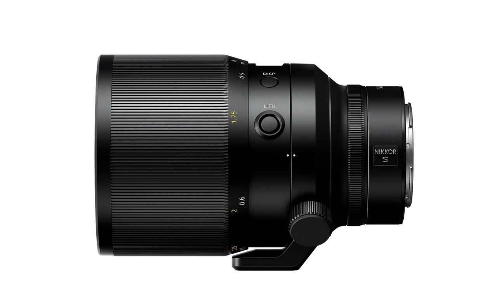

Ночная оптика
Устройства для обнаружения и наблюдения за объектами в условиях полной темноты или плохой видимости.

Приборы ночного видения (ПНВ)
Работают на основе электронно-оптических преобразователей (ЭОП). Они улавливают даже минимальный свет (от звезд или луны) и усиливают его в тысячи раз. Позволяют видеть в темноте так же хорошо, как днем, но в зеленовато-серых тонах.
Тепловизоры
Эти приборы совершенно не нуждаются в свете. Они улавливают инфракрасное (тепловое) излучение от объектов. Тепловизор покажет человека или животное даже сквозь густой туман, дым или легкие препятствия, так как они всегда теплее окружающей среды.


Специальные объективы
Разрабатываем объективы с повышенной светосилой специально для ночных условий. Они минимизируют потери света и обеспечивают максимально четкое изображение при съемке ночью.
Оптика специального назначения
© ЗАО «Завод Юпитер»
Наверх ↑